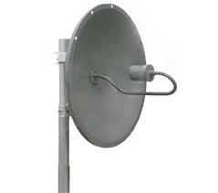
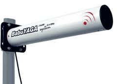
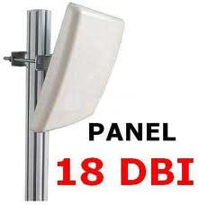
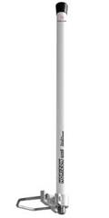
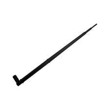
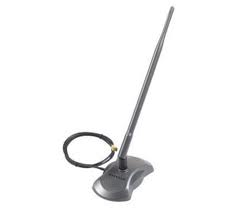
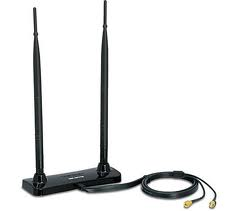
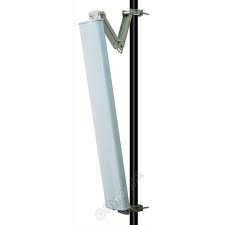
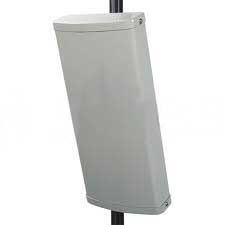
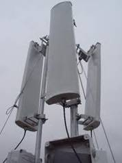

Antenas Wifi
Para un buen enlace entre el MODEM y el adaptador Wifi, si la distancia es corta la antena no es importante, pero si la distancia es larga si tiene importancia el tipo de antena de ambos aparatos, dependiendo de ella, podemos conectarnos de una manera mas estable y desde mas distancia, se ha conseguido hacer conexiones entre MODEM y adaptador desde distancias superiores a los 5 Km. Vamos a ver los tipos de antenas, para así poder elegir la mas adecuada a nuestras necesidades.
Existen tres grandes grupos de antenas.
- Antenas Direccionales: Orientan la señal en una dirección muy determinada con un haz estrecho pero de largo alcance, actúa de forma parecida a un foco de luz que emite un haz concreto y estrecho pero de forma intensa (más alcance). Generalmente el haz o apertura y el alcance son inversamente proporcionales, esto es a mayor apertura menos alcance y a menor apertura más alcance. El alcance de una antena direccional viene determinado por una combinación de los dBi de ganancia de la antena, la potencia de emisión del punto de acceso emisor y la sensibilidad de recepción del punto de acceso receptor. Dentro de las antenas direccionales podemos distinguir varios tipos, de menor a mayor apertura serían:
- Parabólicas (disco o rejilla), con estas se consigue el mayor alcance, pueden llegar a los 5 Km. de distancia.
- Yagis (pronúnciese “yaguis”), son similares a las antenas de televisión, también tienen gran alcance y no es tan complejo orientarlas.
- Planares o Paneles, estas aunque no tienen tanto
alcance, pero es mucho mas fácil orientarlas y además no son tan
voluminosas como las anteriores, por lo que su instalación es muy
sencilla.
  
- Antenas Omnidireccionales: Orientan la señal en todas direcciones con un
haz amplio pero de corto alcance. Si una antena direccional sería como un
foco, una antena omnidireccional sería como una bombilla emitiendo luz en
todas direcciones con menor alcance.
Las antenas Omnidireccionales “envían” la información teóricamente a los 360 grados por lo que es posible establecer comunicación independientemente del punto en el que se esté, ya que no requieren orientarlas. En contrapartida, el alcance de estas antenas es menor que el de las antenas direccionales.
   
- Antenas Sectoriales: Son la mezcla de las antenas direccionales y las omnidireccionales. Las antenas sectoriales emiten un haz más amplio que una direccional pero no tan amplio como una omnidireccional. De igual modo, su alcance es mayor que una omnidireccional y menor que una direccional. Para tener una cobertura de 360º (como una antena omnidireccional) y un largo alcance (como una antena direccional) deberemos instalar, tres antenas sectoriales de 120º ó 4 antenas sectoriales de 80º. Este sistema de 360º con sectoriales se denomina “Array”. Las antenas sectoriales suelen ser más costosas que las antenas direccionales u omnidireccionales.
  
Visto esto podemos elegir una antena omnidireccional, si no necesitamos grandes prestaciones, pero si queremos un poco mas yo me decantaría por una planar, ya que son poco voluminosas no requieren grandes requisitos para orientarlas ya que tienen un ángulo 30º tanto vertical como horizontal, y lo mas importante, son fáciles de hacer, aunque tampoco son muy caras.